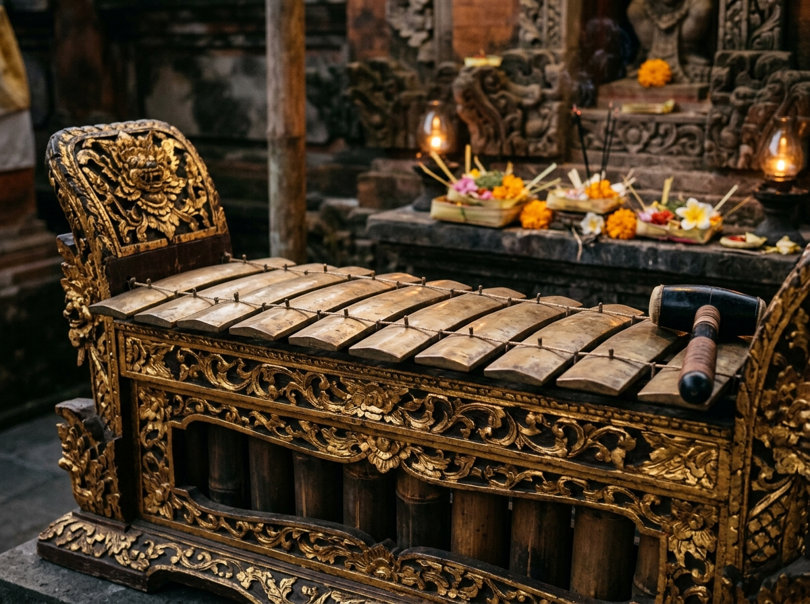

Era Tua • Abad XGamelan Selonding
Bilah Besi Tempa Kuno • Desa Tenganan Pegringsingan
Ansambel paling purba dan suci di Bali. Terbuat dari bilah besi berat tanpa bumbung bambu peredam, menghasilkan getaran pekat bernuansa magis pengiring upacara Perang Pandan.
Bahan Besi Tempa
7-Nada Kuno
Dewa Yadnya Sakral